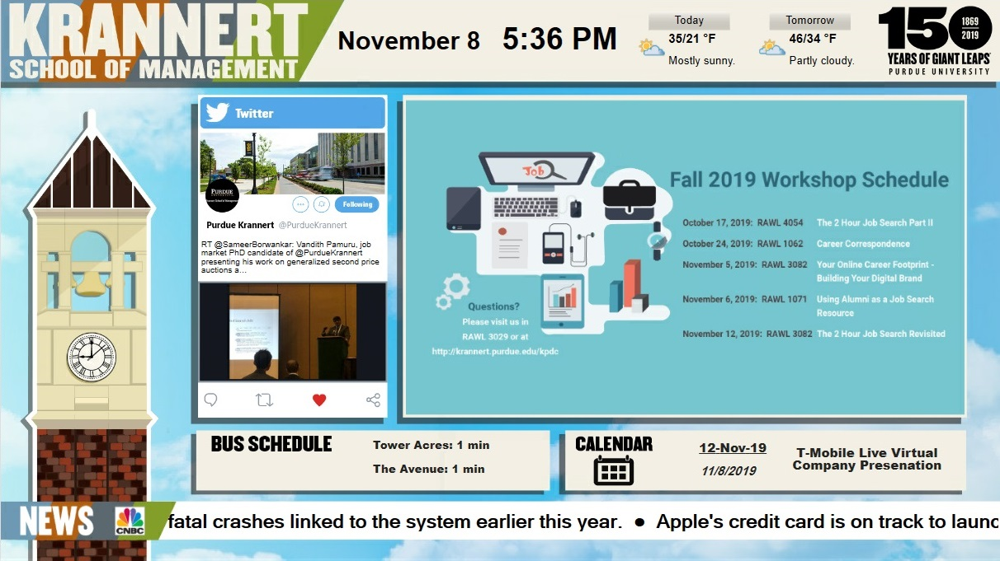
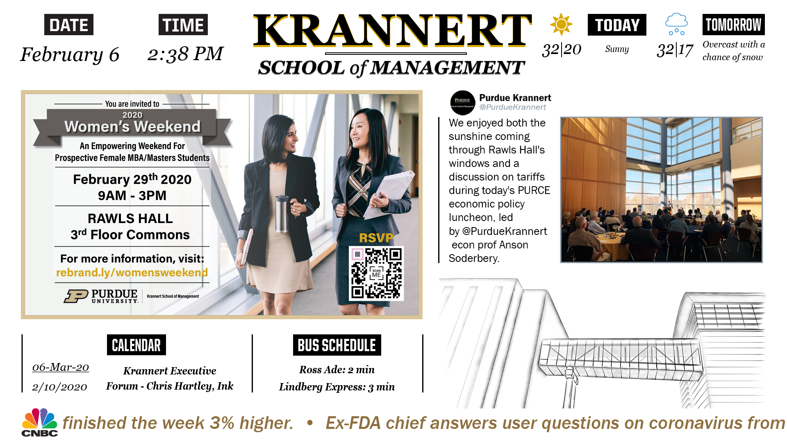
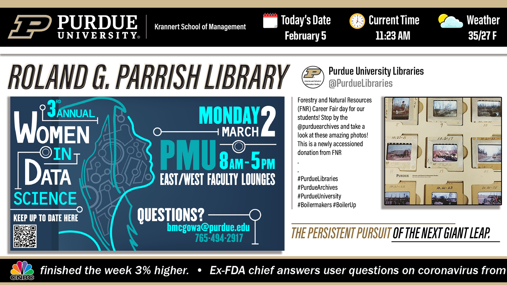

Krannert Digital Signage
During my tenure at the Krannert School of Management, I served as a core member of the digital media team responsible for the school’s digital signage content strategy. My role was to develop high-impact visual content that resonated with prospective students and the public, ensuring the institution’s presence felt modern, prestigious, and welcoming.
Krannert's Digital Signage was made up of templates, which would display all necessary information. Within that, data feeds were responsible for filling content areas. This included social media and slides, the creation of which was entirely controlled by my team.
Illustration / Branding / Animation
Problem
I faced a variety of challenges during my term, including hurdles from a visual communication standpoint and a major institutional pivot. First, our primary medium, which were digital displays in high-traffic campus areas, offered only a few seconds to capture attention. Static graphics, while effective for more simplistic messaging, were limited in their ability to convey the depth of certain informational topics required for student and faculty outreach. Second, midway through my time there, the school underwent a comprehensive brand overhaul. This meant our entire existing content library was suddenly obsolete, requiring a massive, synchronized effort to overhaul our visual assets without disrupting the recruitment and communication cycle.
Design Intent / Insight
When it came to the introduction of new branding guidelines, I led the effort to systematically revise our content library, ensuring every animation, layout, and digital asset adhered to the new standards. My intent was to treat the rebrand as an opportunity to not just "update" the work, but to elevate it—ensuring that the new guidelines actually improved the visual storytelling we had established previously.



When it came to addressing the limitations of static graphics, I set my sights on information layering through motion. By transitioning away from static slides, I used motion graphics to "stack" information—leading with a bold visual hook and then revealing critical details (dates, calls to action, program names) in a rhythmic sequence.
Outcomes
The result was a seamless transition into a new era for the school’s brand. By overhauling the content library and implementing a motion-first strategy, we significantly strengthened Purdue’s public-facing presence. We successfully translated complex institutional changes into a digestible, energetic visual language that clearly communicated the school's value to the next generation of students. For me, this experience was a masterclass in brand management and teamwork, proving that I can maintain high-quality output and lead collaboration even during periods of significant organizational change.